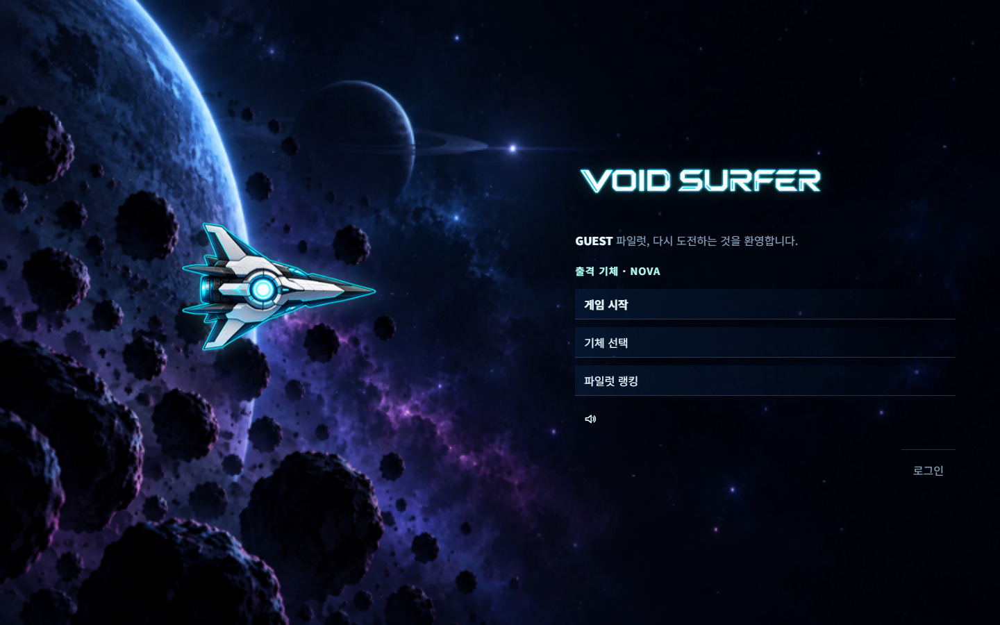
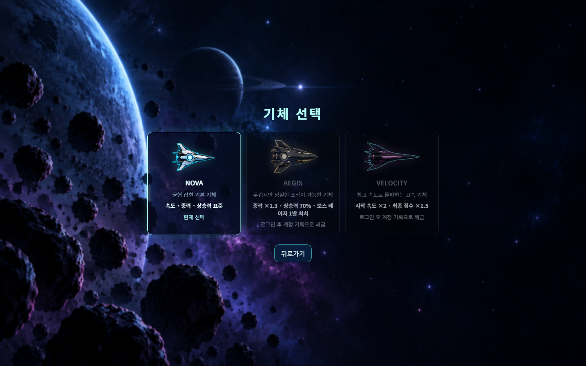
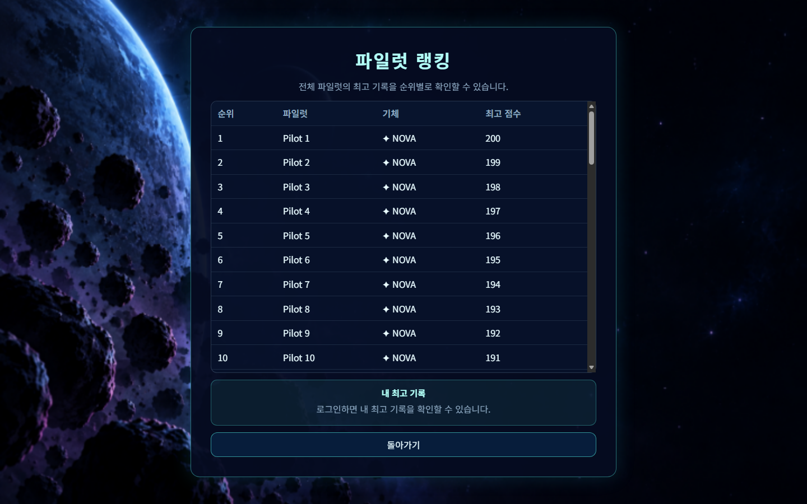
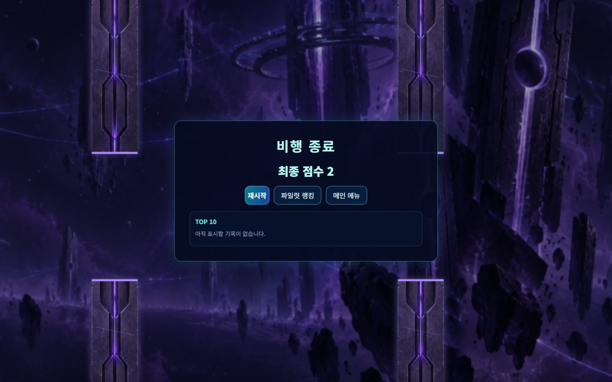
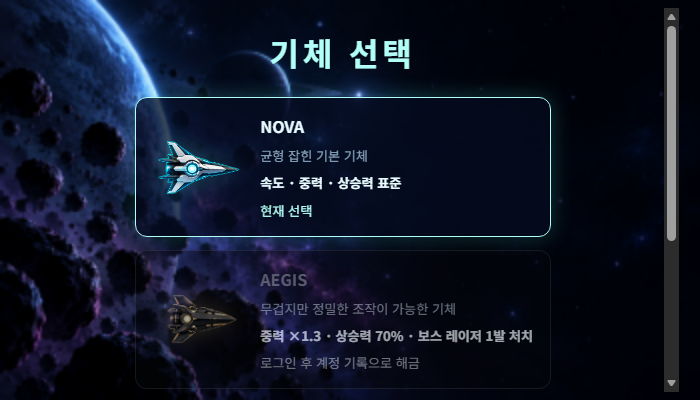
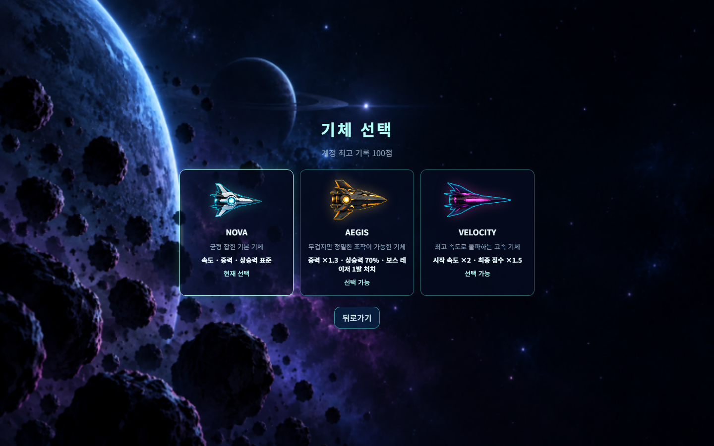
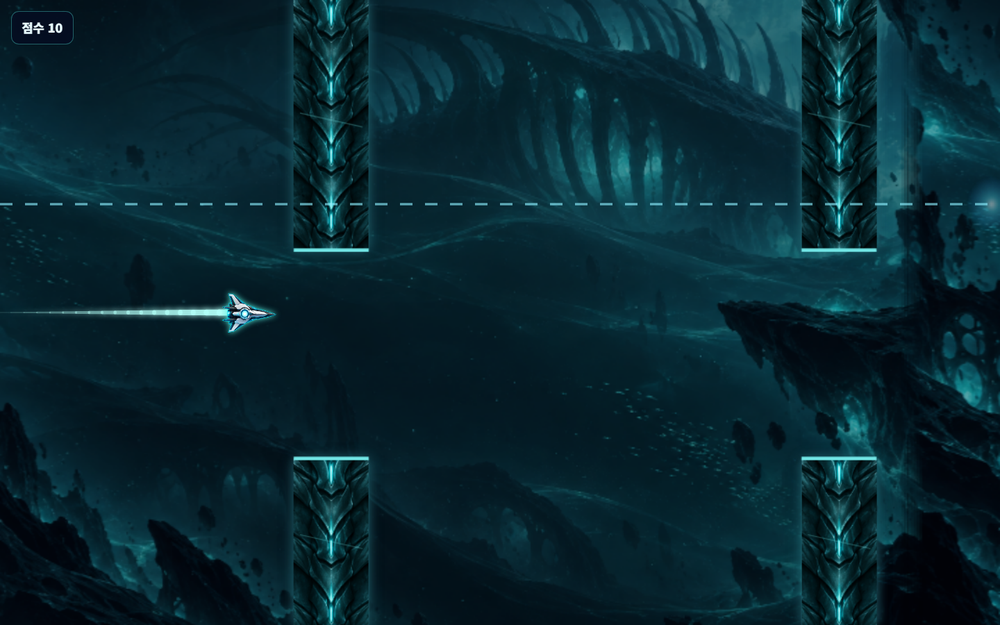
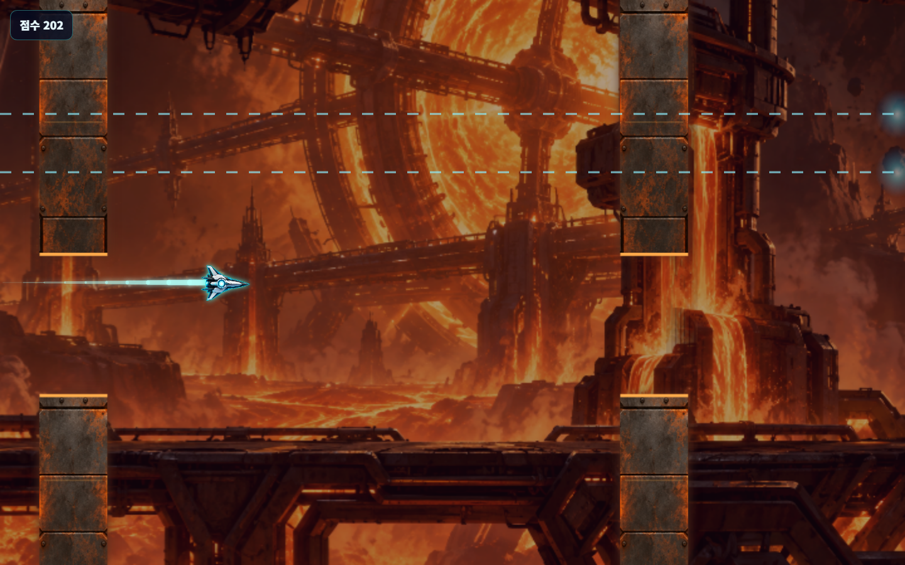
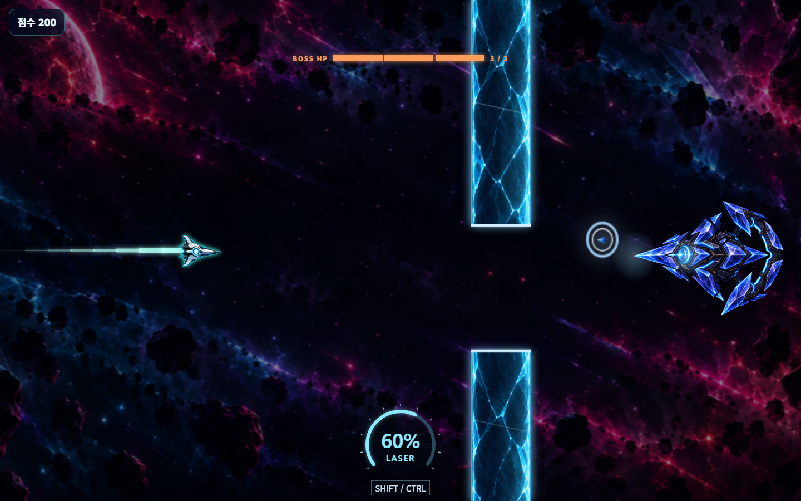
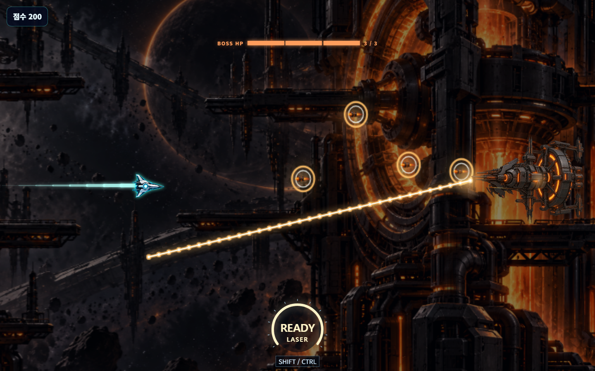

VOID SURFER · 실제 개선 적용 화면
프로덕션 엔진·렌더러·컨트롤러·HUD·CSS로 캡처했습니다. 재현용 중력 0/고정 난수와 로컬 인증·랭킹 예시 데이터를 사용했고, 외부 계정이나 DB는 변경하지 않았습니다.
GUEST · NOVA만 사용 / 저장 기록 없음

로그인 없이 타이틀 진입
NOVA만 선택 가능, 게스트 최고 기록 제거
전체 랭킹은 조회, 개인 저장 기록은 표시하지 않음
이번 플레이 점수 2점만 표시, 개인 순위 빈 칸 제거
가로 모바일: 기체·설명 겹침 수정, 기존 세로 스크롤 유지
로컬 인증 예시 계정: 최고 기록 100점 / 기존 해금 유지일반 / WARNING 줄 레이저

보스 없이 일반 구간에서도 한 줄 예고
WARNING에서도 안전한 두 줄만 예고보스 진입과 배경 / 투사체
 2.4초 사이렌·알림, 암전 중 기체는 표시
2.4초 사이렌·알림, 암전 중 기체는 표시
벽 변속과 독립된 일정한 배경 이동
기체·보스는 원래 화질, 투사체는 경량화, 예고선은 선명하게 유지렌더링 변경 전후
같은 실제 장면의 변경 전후 비교 보기 · 검증 보고서 · 성능 실측 원본